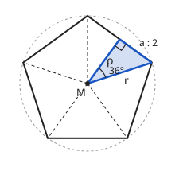

Regelmäßige Vielecke
Mit einem KI-Tutor lernen
Ein KI-Tutor erklärt dir diese Seite und hilft dir bei den Aufgaben. Wähl deinen Assistenten:
Mit Claude öffnen Mit ChatGPT öffnen Mit Mistral Vibe öffnen
Du nutzt dein eigenes Konto beim Anbieter. Der Assistent ist kein Angebot von lernapps.net: lernapps liefert nur Inhalte und Aufgaben. Die Wahl gilt für alle Seiten, nur auf diesem Gerät.
Winkel am Mittelpunkt
Wenn du bei einem regelmäßigen Vieleck Seite, Winkel oder Fläche ausrechnen willst, zum Beispiel für ein Sechseck-Pflaster, hilft dir ein Dreieck im Vieleck.
Ein regelmäßiges Vieleck hat lauter gleich lange Seiten und gleich große Winkel. Seine Ecken liegen alle auf einem Kreis um den Mittelpunkt M. Verbindest du jede Ecke mit M, zerlegst du das Vieleck in gleiche Dreiecke.
Aufgabe
Lösung
Richtige Antwort: 45 °
Um den Mittelpunkt herum liegt der Vollwinkel 360°. Geteilt auf 8 gleiche Dreiecke sind das 360° : 8 = 45° je Dreieck.
Das Dreieck halbieren
Wenn du Seite und Fläche aus dem Radius ausrechnen willst, brauchst du ein rechtwinkliges Dreieck. Du erzeugst es, indem du ein Teildreieck halbierst.
Jedes dieser Dreiecke ist gleichschenklig: Zwei Seiten sind Radien r des Kreises, die dritte ist eine Seite a des Vielecks. Du halbierst es mit der Höhe. So entsteht ein rechtwinkliges Dreieck. Im Bild ist es für ein Fünfeck blau markiert.

© CC0-1.0Das blaue Dreieck: Hypotenuse r, Ankathete ρ, Gegenkathete a : 2. Der Winkel bei M ist die Hälfte von 72°.
Der Winkel bei M ist im halbierten Dreieck nur halb so groß: 180° : n. Die Strecke ρ (sprich „Rho“) von M zur Mitte einer Seite heißt Apothem. Sie ist die Höhe des Teildreiecks.
- Apothem
Das Apothem ρ eines regelmäßigen Vielecks ist der Abstand vom Mittelpunkt zur Mitte einer Seite. Es steht senkrecht auf der Seite.
Die Fläche besteht aus n Teildreiecken. Jedes hat die Grundseite a und die Höhe ρ.
Der Innenwinkel des Vielecks ist an jeder Ecke zweimal der Winkel an der Basis des Teildreiecks, also 180° − 360° : n.
Das Fünfeck
Wenn du die Formeln an einem Vieleck prüfen willst, rechne ein Fünfeck durch.
Fünfeck mit r = 5 cm
Der Winkel im halbierten Dreieck ist 180° : 5 = 36°.
Die Seite ist etwa 5,88 cm lang, das Apothem 4,05 cm, die Fläche etwa 59,4 cm². (Mit den hier gerundeten Werten 5,88 und 4,05 kommt 59,5 heraus. Mit den genauen Zwischenwerten ist es 59,4.) Der Innenwinkel ist 180° − 72° = 108°.
Vom Vieleck zum Kreis
Wenn du dich fragst, was ein Vieleck mit dem Kreis zu tun hat, rechne den Umfang eines Vielecks mit sehr vielen Ecken.
Bei 96 Ecken ist der Umfang des Vielecks mit r = 1 etwa 6,282. Das ist fast 2 · π ≈ 6,283. Das ist dasselbe Annähern wie auf der ersten Seite: Je mehr Ecken, desto mehr gleicht das Vieleck dem Kreis.
Aufgaben
Aufgabe
Drei Beispielaufgaben, jede mit ihrer Lösung:
Aufgabe Nr. 1
Wie groß ist der Innenwinkel eines regelmäßigen Vielecks mit 12 Ecken? Gib ihn in Grad an.
Tipp
Der Innenwinkel und der Winkel bei M im Teildreieck, 360° : n, ergeben zusammen 180°.
Lösung
Richtige Antwort: 150 °
Aufgabe Nr. 2
Wie groß ist der Innenwinkel eines regelmäßigen Vielecks mit 10 Ecken? Gib ihn in Grad an.
Tipp
Der Innenwinkel und der Winkel bei M im Teildreieck, 360° : n, ergeben zusammen 180°.
Lösung
Richtige Antwort: 144 °
Aufgabe Nr. 3
Wie groß ist der Innenwinkel eines regelmäßigen Vielecks mit 5 Ecken? Gib ihn in Grad an.
Tipp
Der Innenwinkel und der Winkel bei M im Teildreieck, 360° : n, ergeben zusammen 180°.
Lösung
Richtige Antwort: 108 °
Aufgabe
Drei Beispielaufgaben, jede mit ihrer Lösung:
Aufgabe Nr. 1
Ein regelmäßiges Vieleck mit 6 Ecken liegt in einem Kreis mit dem Radius r = 4 cm. Wie lang ist eine Seite? Runde auf zwei Stellen nach dem Komma.
Tipp
Im rechtwinkligen Dreieck ist r die Hypotenuse und a : 2 die Gegenkathete zu 180° : n.
Lösung
Richtige Antwort: 4 cm (erlaubte Abweichung: 0,01 cm)
Aufgabe Nr. 2
Ein regelmäßiges Vieleck mit 8 Ecken liegt in einem Kreis mit dem Radius r = 7 cm. Wie lang ist eine Seite? Runde auf zwei Stellen nach dem Komma.
Tipp
Im rechtwinkligen Dreieck ist r die Hypotenuse und a : 2 die Gegenkathete zu 180° : n.
Lösung
Richtige Antwort: 5,36 cm (erlaubte Abweichung: 0,01 cm)
Aufgabe Nr. 3
Ein regelmäßiges Vieleck mit 8 Ecken liegt in einem Kreis mit dem Radius r = 6 cm. Wie lang ist eine Seite? Runde auf zwei Stellen nach dem Komma.
Tipp
Im rechtwinkligen Dreieck ist r die Hypotenuse und a : 2 die Gegenkathete zu 180° : n.
Lösung
Richtige Antwort: 4,59 cm (erlaubte Abweichung: 0,01 cm)
Aufgabe
Drei Beispielaufgaben, jede mit ihrer Lösung:
Aufgabe Nr. 1
Ein regelmäßiges Vieleck mit 8 Ecken liegt in einem Kreis mit dem Radius r = 7 cm. Berechne seine Fläche und runde auf eine Stelle nach dem Komma.
Tipp
Berechne erst a und ρ. Jedes Teildreieck hat die Fläche ein halb mal a mal ρ, und es gibt n davon.
Lösung
- Mit a = 2 · r · sin(180° : n) und ρ = r · cos(180° : n) ergibt das 138,6 cm².
Richtige Antwort: 138,6 cm² (erlaubte Abweichung: 0,1 cm²)
Aufgabe Nr. 2
Ein regelmäßiges Vieleck mit 10 Ecken liegt in einem Kreis mit dem Radius r = 10 cm. Berechne seine Fläche und runde auf eine Stelle nach dem Komma.
Tipp
Berechne erst a und ρ. Jedes Teildreieck hat die Fläche ein halb mal a mal ρ, und es gibt n davon.
Lösung
- Mit a = 2 · r · sin(180° : n) und ρ = r · cos(180° : n) ergibt das 293,9 cm².
Richtige Antwort: 293,9 cm² (erlaubte Abweichung: 0,1 cm²)
Aufgabe Nr. 3
Ein regelmäßiges Vieleck mit 5 Ecken liegt in einem Kreis mit dem Radius r = 9 cm. Berechne seine Fläche und runde auf eine Stelle nach dem Komma.
Tipp
Berechne erst a und ρ. Jedes Teildreieck hat die Fläche ein halb mal a mal ρ, und es gibt n davon.
Lösung
- Mit a = 2 · r · sin(180° : n) und ρ = r · cos(180° : n) ergibt das 192,6 cm².
Richtige Antwort: 192,6 cm² (erlaubte Abweichung: 0,1 cm²)
Aufgabe
Lösung
Richtige Antwort: 8,7 cm (erlaubte Abweichung: 0,05 cm)
Im Teildreieck ist der Winkel 180° : 6 = 30°. Dann ist ρ = r · cos 30° = 10 · 0,866 ≈ 8,7 cm. Du kannst es auch mit Pythagoras prüfen: Die halbe Seite ist 5 cm, also ρ² = 10² − 5² = 75, und die Wurzel daraus ist etwa 8,7.
Aufgabe
Lösung
Im halbierten Teildreieck mit dem Winkel 18° bei M richtige Antwort
Der Winkel bei M im Teildreieck ist 360° : 10 = 36°, halbiert 18°. Im rechtwinkligen Dreieck liegt a : 2 diesem Winkel gegenüber.
Im Teildreieck mit dem Winkel 36° bei M, ohne es zu halbieren
Dieses Dreieck ist nicht rechtwinklig, du kannst den Sinus nicht direkt benutzen. Erst halbieren, dann hast du einen rechten Winkel.
Im Dreieck aus drei Ecken des Vielecks
Auch dieses Dreieck ist im Allgemeinen nicht rechtwinklig und hat r nicht als Seite. Mit ihm kommst du an die Seite a nicht direkt heran.
Das versteckte rechtwinklige Dreieck entsteht, wenn du das Teildreieck mit seiner Höhe halbierst. Der Winkel dort ist 180° : n.
Das kannst du jetzt: Du findest in einem regelmäßigen Vieleck das rechtwinklige Dreieck und berechnest Seite, Winkel und Fläche.
Fehler gefunden oder eine Idee für diese App?